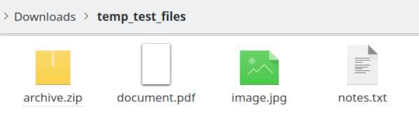
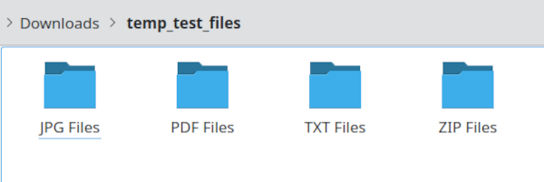

Why You'll Love It
Easy-to-Use Interface
A simple and clean graphical user interface (GUI) that's intuitive for everyone.
Standalone Executables
No need to install Python or any other dependencies. Just download and run on Windows, macOS, or Linux.
Smart Conflict Resolution
Automatically renames files if a file with the same name already exists in the destination folder.
See the Transformation
Before
A chaotic mix of documents, images, and archives.
After
Perfectly organized into type-based subfolders.
How It Works in 3 Simple Steps
1. Select a Directory
Click the "Browse..." button to choose any folder on your computer that you want to tidy up. The app defaults to your "Downloads" folder for convenience.
2. Confirm the Action
Click the "Organize Files" button. A confirmation prompt appears to ensure you don't organize a folder by accident. This is your safety check!
3. See the Magic!
The script instantly moves your files into neatly organized subfolders based on their type (e.g., 'PDF Files', 'JPG Files'). A log shows you exactly what was moved.
Built-in Help
Confused? Just click the "Instructions" button to get a clear, step-by-step guide right within the app.
For Developers
Interested in the source code? You can find the full repository, version history, and license on GitHub.
View on GitHub